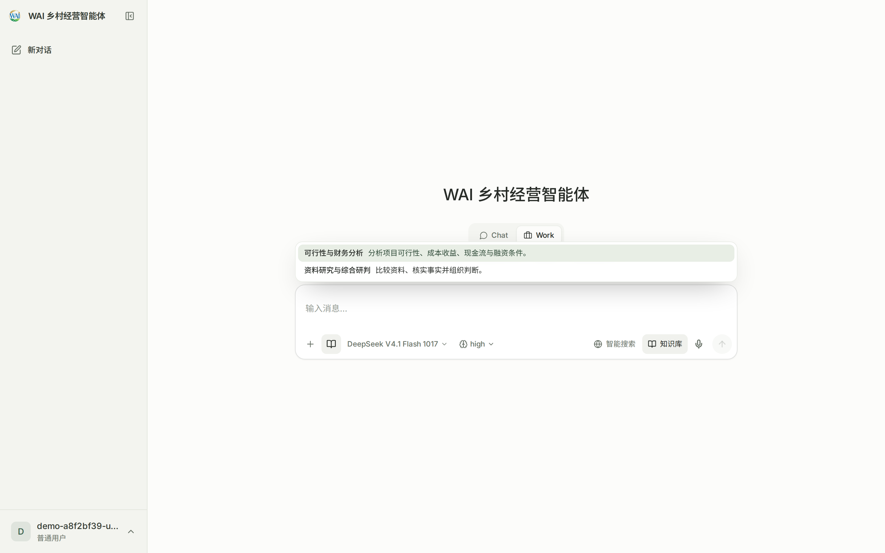
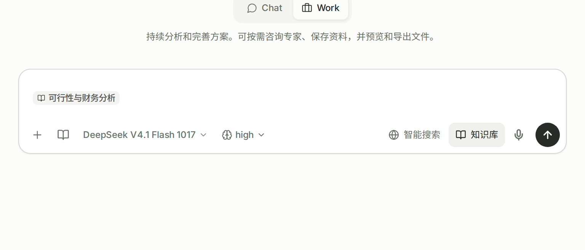

技能与设置
技能
#概述
做同一类事，有经验的人会按固定的步骤和角度来。技能就是把这套步骤和角度写下来，交给助手。
比如做可行性分析，要看投入、成本收益、周转资金、回收期、盈亏平衡。选了「可行性与财务分析」这个技能，助手就按这些点来分析，不容易漏。
技能不是新功能，也不是另一个助手，只是这一条消息的工作方法。
#选用技能
有两种方式。
#方式一：点按钮
- 点输入框下方的书本图标「选择技能」。
- 在弹出的列表里，用
↑↓选择，或直接用鼠标点。每个技能下面有一句话说明适合什么情况。 - 按
Enter（或Tab）确定。 - 技能以标签的形式出现在输入框的文字里。接着写问题，发送。

#方式二：输入斜杠
在输入框最开头输入 /，技能列表自动弹出。继续输入技能名称的几个字，列表会筛选。用 ↑ ↓ 选，Enter 确定。

#注意
- 你选中的技能说明会完整提供给助手。
- 技能只对这一条消息有效。 下一条消息如果还要用，需要再选一次。
- 对一条用过技能的提问「编辑重发」或「重新生成」，助手会沿用原来选的技能。见历史、重试与分支。
- 不选技能也完全可以提问。
#技能列表
技能列表里共有 12 项，每项下面有一句话说明适合什么情况。
| 技能 | 什么时候用 |
|---|---|
| 理解地方的发展基础 | 理解镇村发展基础、资源组合、现有经营与发展潜力，形成资源及其经营含义的判断 |
| 政策解读与运用 | 解读政策含义，判断适用范围，梳理工作要求，比较项目支持与资金申报机会 |
| 产业与商业战略 | 比较乡村产业、商业模式、市场定位，或统筹镇村多年发展规划 |
| 品牌与市场增长 | 改善产品定位、乡村品牌、客户触达、销售渠道、内容与复购，把本地价值转成客户能理解、愿意持续购买的理由 |
| 可行性与财务分析 | 分析项目投入、成本收益、周转资金、融资、回收期、盈亏平衡或敏感性，让数量关系解释经营选择 |
| 风险与应对 | 分析会改变项目选择和实施方式的重要风险，寻找改善与应对办法 |
| 组织、人才与利益联结 | 设计主体合作、村集体参与、基层协同、人才分工与利益联结机制 |
| 空间、公共设施与生态 | 分析土地空间、基础设施、人居环境与生态如何支持乡村发展，比较选址、改善和长期维护方式 |
| 效益与影响 | 判断项目的经济、社会、生态、文化和治理价值，分析农户、集体与经营者如何受益，以及怎样跟踪实际变化 |
| 资料研究与综合研判 | 围绕一个问题研究资料，比较多份材料，分析原因，形成综合研判 |
| 政务材料起草与修订 | 起草、改写或审阅政务工作方案、调研报告、汇报材料和讲话材料；根据用途组织论述和措施，保留你的事实和既定口径 |
| 对话可视化 | 用受控的 HTML 图表或可交互页面解释数据、关系和方案；刷新后保留状态，并可把当前参数带入下一轮 |
#示例
选「可行性与财务分析」后提问：
附件是我们合作社的养殖场扩建方案。请测算投资回收期，并说明饲料价格上涨 10% 时结论会不会变。选「政务材料起草与修订」后提问：
请把附件里的调研笔记，整理成一份给镇党委汇报的调研报告，约 1500 字，保留所有数据。选「品牌与市场增长」后提问：
我们村的特色是高山茶。请帮我们想一想，面向城里的年轻消费者，品牌该怎么讲，销售渠道从哪里起步。#技能和专家的区别
| 技能 | 专家 | |
|---|---|---|
| 是什么 | 一套工作方法 | 一位负责某个领域的分析者 |
| 谁选 | 你，在输入框里选 | 主顾问，根据问题自动分派 |
| 用在哪 | Chat 与 Work 都能用 | 只在 Work 里，由主顾问按需调用 |
两者可以一起用：选好技能，在 Work 里提问，主顾问和专家会按这套方法工作。